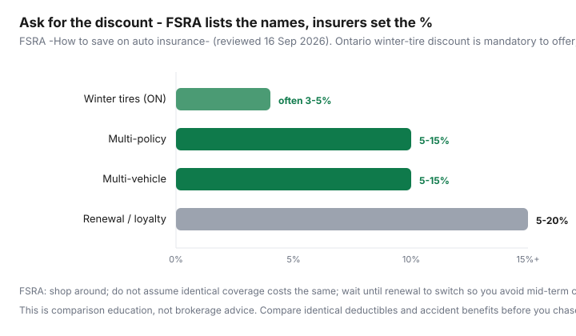

Transportation · Canada
How to shop auto insurance in Canada: broker vs direct vs aggregator without getting lost
Canadians renew auto insurance the way they renew a streaming login: auto-pay, eyes closed, until a friend mentions they “got $400 off.” The friend compared a different deductible, a different commute distance, or a telematics program you would hate. Shopping is not hunting the smallest number on a banner ad. It is lining up identical coverage across a broker, a direct writer, and maybe an aggregator, then picking a channel you can stand to call at claim time.
This is educational comparison for Canadian households — especially Ontario’s FSRA-regulated market — not brokerage advice and not a recommendation of any insurer. Provincial rules differ (ICBC, SAAQ + private damage in Québec). For the rest of the car bill see ownership TCO.
Disclosure: Insurance quote comparison tools and broker-marketplace referrals are offer types. Saving Optimizer may earn a commission if we later add partner links. We are not an insurance broker, agent, or insurer. We do not sell policies or advise which coverage you should buy. Compare quotes with licensed intermediaries and read your province’s regulator materials (FSRA in Ontario, AMF in Québec, and so on).
Key takeaways
- Brokers shop a panel. Direct writers sell one company. Aggregators estimate. None of them is “the cheap one” in every postal code.
- Compare the same third-party liability, accident benefits, collision/comprehensive deductibles, listed drivers, and annual kilometres.
- FSRA (Ontario): shop around; ask about discounts; do not switch mid-term just to chase a rate; pay on time.
- Ontario insurers must offer a winter-tire discount (amount varies). Multi-policy and multi-vehicle are often 5–15% in FSRA’s own ranges.
- A too-good online premium with missing collision, a $2,500 deductible you cannot pay, or mystery accident-benefits options is not a save.
What brokers, direct insurers, and aggregators each do
| Broker | Direct writer / captive agent | Aggregator / quote site | |
|---|---|---|---|
| Sells | Multiple insurers on a panel | One company’s products | Leads and estimated ranks |
| Useful when | You want someone to re-trade a bundle or a messy driving record | You already like that brand or an affinity group rate | You need a first pass of who is even in range |
| Blind spot | Panel may exclude a direct-only discounter | Cannot show you the rival’s price | Coverage never matches until a human binds it |
| You still must | Bring a coverage sheet | Bring the same coverage sheet | Re-quote with a licensed person before you cancel anything |
Use two channels minimum: one broker (or independent) and one direct quote. If they land within a few percent on the same sheet, stop. Your Saturday is worth more than the third $8 gap.
Compare identical coverage and deductibles — not headline premiums
Before anyone types your postal code, write the sheet:
- Third-party liability (FSRA notes Ontario’s standard minimum is $200,000 and many households consider $1–2 million — that is a risk conversation with a licensed person, not a slogan here).
- Accident benefits options (Ontario has optional increases; do not let a quote silently drop to a cheaper AB package).
- Collision and comprehensive deductibles ($500 vs $1,000 changes the premium and your overnight risk).
- Listed drivers, commute vs pleasure, one-way kilometres, annual kilometres.
- Winter tires yes/no, garage vs street, anti-theft, telematics yes/no.
FSRA’s own example: optional collision on a car worth under $2,000 may not be cost-effective because a claim may not beat the deductible. That is a coverage design question, not a “buy the cheapest package” question.
Provincial quirks: Ontario FSRA tips vs other provinces
Ontario (FSRA) — private insurers, filed rates, consumer page “How to save on auto insurance” (reviewed 16 Sep 2026): prices vary by company and by your risk; last year’s cheapest may not win; shop; ask discounts; higher deductibles can lower premium; do not switch midway through the year; pay on time (non-payment cancellations can make you look like a worse risk). Winter-tire discount must be offered.
Québec — SAAQ covers bodily injury on the public side; private insurers compete on damage to the vehicle. Do not compare a Québec damage quote to an Ontario all-in number.
British Columbia — public insurer (ICBC) for basic; optional cover is its own shopping problem. “Broker vs direct” is not the Ontario diagram.
Alberta and Atlantic — private markets with different regulators. Group and affinity rates still exist. The worksheet (identical cover, two channels, renewal timing) still works.
Telematics / UBI: Ontario allows usage-based programs (FSRA removed older UBI guidance in 2020 to allow more designs). Ask whether a poor score can raise renewal, what data is collected, and whether you can buy the same insurer without the app. Do not enrol because a quote form checked the box for you.
Discounts checklist: multi-policy, winter tires, telematics, mileage
FSRA’s published discount list is a script for your call, not a promise of stacking every bar in the chart:
- Driver training / graduated licence (FSRA cites 10% examples around G2 and G milestones with clean records — time-limited).
- Group or affinity (employer, union, alumni).
- Mature driver, retiree.
- Multi-policy (auto + home/tenant): FSRA cites 5–15%.
- Multi-vehicle: 5–15%.
- Renewal / loyalty: 5–20% — which is why mid-term hopping can look clever and then lose the loyalty slice.
- Winter tires (Ontario: must be offered). See how to claim it and the four-year rubber worksheet.
- Low mileage, alarms, telematics — company-specific.

Ask, every renewal: “Here is my coverage sheet. Which discounts am I missing, and what proof do you need for winter tires?” Then get one competing quote with the same sheet.
How often to re-shop (and why mid-term switches can hurt)
FSRA’s last tip on the save page is not subtle: do not switch insurance companies midway through the year — wait until renewal to avoid cancellation penalties. Re-shop 3–6 weeks before renewal so you can bind without a gap. Re-shop off-cycle when you add a driver, move postal codes, change commute, or buy/sell a vehicle — those are underwriting events, not coupon trips.
If a policy was cancelled for non-payment more than twice, FSRA notes you can be viewed as higher risk and monthly payment options can disappear. Autopay from an account that actually holds the money is cheaper than any telematics app.
Sample quote worksheet for apples-to-apples comparison
| Field | Current | Broker quote | Direct quote |
|---|---|---|---|
| Insurer name | |||
| Liability limit | |||
| Accident benefits package | |||
| Collision / comprehensive deductibles | |||
| Listed drivers + kilometres | |||
| Winter tires / telematics / bundle | |||
| Annual premium (with tax) | |||
| Cancellation / short-rate if I leave early |
Worked example (labelled, not a quote): $2,400 current Ontario premium. Broker returns $2,160 on the same $1,000 deductibles and winter-tire discount. Direct returns $2,050 but collision deductible is $2,500 and AB options differ. The $2,050 is not cheaper until you either accept the deductible or they re-quote at $1,000. Do the second quote.
Red flags: too-good rates with coverage gaps
- Headline monthly price with no insurer name and no coverage PDF.
- Missing collision on a financed car (the lender will not share your optimism).
- Pleasure-use rating while you commute four days (misrepresentation is how claims get ugly).
- Named driver missing a teenage G2 who actually drives the car.
- Aggregator “from $89/month” that assumed a rural postal code you do not live in.
- Pressure to bind on the phone before you read accident-benefits options.
Ratehub’s 2026 TCO uses $164/month as a national insurance average — useful as a budget placeholder, useless as your number. Your postal code, record, and vehicle theft rating will not match a national mean. Shop the sheet. Bind with someone licensed. Keep the PDF.
Sources & date stamps
- FSRA, “How to save on auto insurance” — shopping, deductibles, discount list (including winter tires, multi-policy 5–15%, multi-vehicle 5–15%, renewal 5–20%), mid-term switch warning, payment history. Reviewed 16 Sep 2026.
- FSRA announcement on removing UBI guidance (23 Nov 2020) — context for telematics competition, not a product endorsement.
- Ratehub winter-tire discount explainer — Ontario mandatory offer, typical 3–5% cited; other provinces optional.
- Industry explainers on broker vs direct (e.g. iSure) for channel definitions — still not a reason to skip a coverage sheet.
Frequently asked questions
Is a broker always cheaper than a direct insurer?
No. Brokers can shop a panel; direct writers sometimes have exclusive discounts you will not see on that panel. FSRA’s point is that companies do not charge the same price for the same benefits — you have to ask both channels with the same coverage sheet.
How often should I re-shop?
At renewal, not mid-term, unless you have a life change that forces a rewrite. FSRA explicitly warns that switching midway can trigger cancellation penalties. Insurers change rates every year; last year’s winner is not this year’s.
Does Ontario require a winter-tire discount?
Ontario requires insurers to offer a winter-tire discount; the percentage is up to the company (often cited around 3–5%). Other provinces may offer one voluntarily. Ask. Keep the receipt. How to claim it without buying all-weathers your insurer rejects: Ontario winter-tire discount.
Are comparison websites quotes I can bind?
Aggregators estimate. They are a shopping list, not a policy. You still bind with an insurer or a licensed broker/agent. Match deductibles and accident benefits before you trust a ranking.
Is this site selling me insurance?
No. This is comparison education. Saving Optimizer is not a broker and is not advising you to buy or cancel a policy. Use licensed channels in your province.